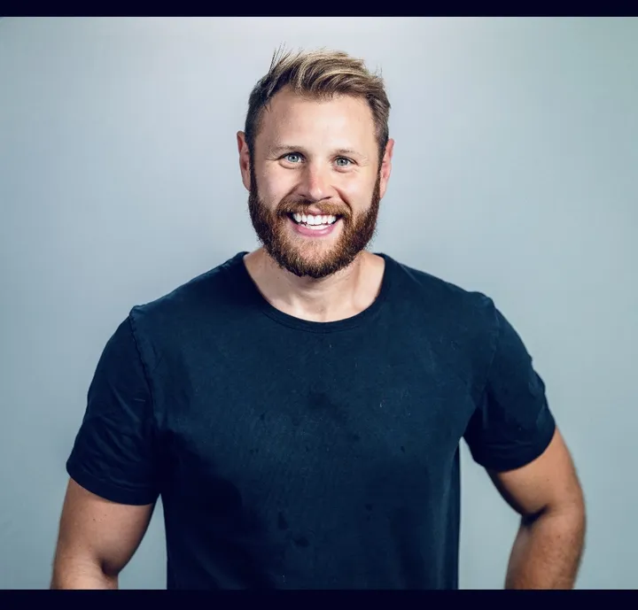

Spot where the market is moving
I help organisations identify where client demand is genuinely shifting, what buyers will continue to pay for, and where propositions, offerings, or go-to-market messages need to evolve.
Global Director of Transformation & AI at FDM Group, leading the shift of a listed consultancy from workforce supplier to AI-enabled, outcome-led services. Salesperson first, transformation leader second, and I think that is the right order.
I help organisations turn AI disruption and market change into commercially credible propositions, scalable delivery models, and growth they can actually execute.
I help organisations identify where client demand is genuinely shifting, what buyers will continue to pay for, and where propositions, offerings, or go-to-market messages need to evolve.
I help take messy, technical, or strategically unclear ideas and shape them into offers clients can understand, buy into, and act on with confidence.
I work well with senior stakeholders who need clarity on operating model, risk, commercial trade-offs, and delivery reality before they commit to change or investment.
I help create momentum in new markets, regions, and propositions by turning early traction into a more structured, repeatable commercial engine.
I focus on shaping opportunities that can actually be delivered, scaled, and defended commercially, because long-term growth depends on execution as much as origination.
Helping reposition a global consulting organisation for an AI-driven services market by leading the evolution of FDM's consulting and delivery model towards AI-enabled, outcome-led services.
"This role requires building new commercial and delivery approaches from first principles, rather than optimising existing ones. I drove the vision to the CEO and wider board that FDM's business model needs to change as AI transforms the working world."
I have seen this model at its peak and under pressure. When the market turned, I pushed for adaptation.
I helped lead commercial performance when FDM was producing strong growth, strong profit, and strong new client momentum. When the market turned and the model came under pressure, I did not spend my time blaming conditions or hiding behind the cycle.
That meant staying close to customers, being honest about what was changing, and helping shift the conversation from selling capacity to building more outcome-led, AI-enabled services. The market changed. The job changed with it.
What matters to me is not whether the cycle was easy or hard. It is whether the sales engine performed, whether the business kept winning, and whether we moved the model forward.
Throughout a sustained contracting market, I maintained the UK as FDM's core commercial and profit engine.
This is the work I now bring into AI adoption and transformation: commercial realism, customer proximity, and model evolution under pressure.
Built FDM's Asia-Pacific business from true start-up conditions to a major regional operation, one of the most formative and demanding commercial builds of my career.

I am a senior commercial and transformation leader with over 15 years of experience building and scaling enterprise technology businesses across the UK, EMEA, and APAC. At heart, I am a hands-on salesperson first. My focus has always been helping organisations move to the next level by working closely with customers, understanding what they actually need, and shaping the product or service offering around that reality.
I am comfortable across the full sales spectrum, from cold outreach and opening doors through to C-level conversations, complex deal strategy, and long-term executive relationship ownership. I have built business from start-up conditions, grown regions from the ground up, and led teams through scale, whilst staying close enough to the customer to know where the product, proposition, or delivery model needs to improve.
I work directly with C-suite and VP+ leaders to help organisations adopt new technology paradigms, evolve operating models, and turn strategic intent into repeatable commercial outcomes. I specialise in moments of transition: new markets, new technologies, and new delivery models.
My work sits at the intersection of enterprise sales, consulting delivery, and organisational change, with a strong focus on AI-enabled services and platform-led models. I am known for clarity of thinking, credibility with senior stakeholders, and the ability to build from zero through to scale without losing the practical sales discipline required to make growth happen.
Outside of work, I am an ambassador for the Brain Tumour Charity, having raised over £200,000. I also love endurance sports including cycling, running, and skiing, and previously played rugby to a semi-pro standard.
The model exists to create clarity, trust and momentum. The objective is always the same: embed AI where it changes outcomes, make it easier to say yes to the right opportunities, and deliver those opportunities with confidence. FDM is the worked example below. The method is the point.
Objective: Improve execution speed, quality, and consistency across the business.
Success looks like: less time spent preparing and reporting, better quality of insight and judgement, and more capacity for genuinely value-adding work.
Objective: Make the consultant workforce structurally more valuable in client environments shaped by AI.
Success looks like: consultants clients see as future-ready, clearer differentiation versus competitors, and stronger confidence in the firm's capability to deliver.
Objective: Position the firm as a credible partner for practical, delivery-led AI adoption.
Success looks like: more solutions-led client conversations, stronger alignment between sales and delivery, and a clearer, more credible AI market position.
Every initiative should create tangible business value by saving time, reducing cost, improving quality, or increasing confidence in decision-making. I use this as the filter for both internal transformation work and client-facing product development.
Essays on AI-native delivery, operating models and workforce redesign. Written from the front line, not the sidelines.
Clients are no longer buying resource. They are buying architecture, AI delivery, and outcomes.
AI Workforce ResetThe workforce question is now inseparable from the strategy question.
Future of WorkMost enterprise AI conversations confuse two very different things. Separating them is the fastest way to work out where the value is and who it reaches first.
The day job is one firm. The question of how AI changes work, careers and opportunity is bigger than that, and I spend a meaningful part of my time on it outside FDM.
Adviser to the House of Lords and The Jobs Foundation on the future of technology work and AI, working alongside Lord Matthew Elliott. Have spoken alongside Sir Charlie Mayfield on youth unemployment and AI. Work with techUK and government on creating careers and opportunity as AI changes what work is.
Advise early-stage AI companies in London and Hong Kong on adoption, tooling selection and go-to-market. Member of an agentic engineering community of fractional CTOs, which keeps the thinking on this site honest about what is actually shipping.
Published pieces on the future of careers and technology, and a growing set of essays on this site about AI-native delivery, operating models and workforce redesign. Read the latest.
Ambassador and recognised as a Young Advocate for Change. Created SENSORA, a one-night dining and music event with my brother Mark, a chef, that has helped raise over £200,000 for research. Sensora 2.0 is coming.
Interested in discussing AI transformation, business model evolution, or the future of consulting?
jamesdtuttiett@gmail.com
Six things people usually ask, in my words